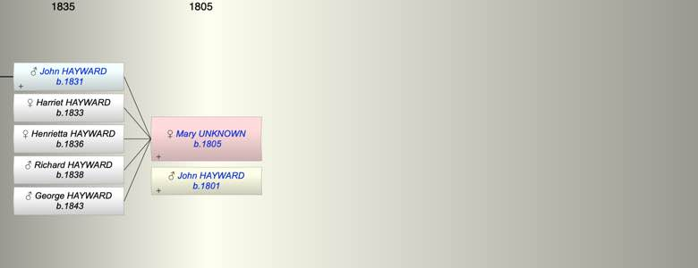

| [Index] |
| Mary UNKNOWN (1805 - ) |
|  |
| b. 1805 at Topsham |
| m. John HAYWARD (1801 - ) |
| d. Y |
| Near Relatives of Mary UNKNOWN (1805 - ) | ||||||
| Relationship | Person | Born | Birth Place | Died | Death Place | Age |
| Self | Mary UNKNOWN | 1805 | Topsham | Y | ||
| Husband | John HAYWARD | 1801 | Clyst St George | Y | ||
| Son | John Perry HAYWARD | 1831 | Topsham | Y | ||
| Daughter | Harriet Ponsford HAYWARD | 1833 | Topsham | Y | ||
| Daughter | Henrietta HAYWARD | 1836 | Topsham | Y | ||
| Son | Richard Henry HAYWARD | 1838 | Topsham | Y | ||
| Son | George Frederick HAYWARD | 1843 | Topsham | Y | ||
| Daughter in Law | Flora BREWER | 15 Dec 1832 | Exminster | Y | ||
| Granddaughter | Mary L HAYWARD | 1857 | Topsham | Y | ||
| Grandson | Thomas J P HAYWARD | 1859 | Topsham | Y | ||
| Events in Mary UNKNOWN (1805 - )'s life | |||||
| Date | Age | Event | Place | Notes | Src |
| 1805 | Mary UNKNOWN was born | Topsham | |||
| 1831 | 26 | Birth of son John Perry HAYWARD | Topsham | ||
| 1833 | 28 | Birth of daughter Harriet Ponsford HAYWARD | Topsham | ||
| 1836 | 31 | Birth of daughter Henrietta HAYWARD | Topsham | ||
| 1838 | 33 | Birth of son Richard Henry HAYWARD | Topsham | ||
| 1843 | 38 | Birth of son George Frederick HAYWARD | Topsham | ||
| Created on a Mac™ using iFamily for Mac™ on 15 Sep 2023 |